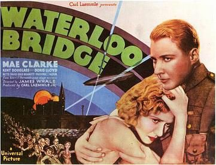

Waterloo Bridge

Starring: Mae Clarke, Douglass Montgomery, Doris Lloyd
Director: James Whale
Writer: Tom Reed, Benn Levy
Producer: Carl Laemmle Jr.
Waterloo Bridge is a 1931 American pre-Code drama romance war film directed by James Whale and starring Mae Clarke and Kent Douglass. The screenplay by Benn Levy and Tom Reed is based on the 1930 play Waterloo Bridge by Robert E. Sherwood. The film was remade in 1940 as Waterloo Bridge and as Gaby in 1956. Both remakes were made by Metro-Goldwyn-Mayer, which bought the 1931 version from Universal.
Trivia
- Based on Waterloo Bridge (play by Robert E. Sherwood).
- Robert E. Sherwood had based his play on his own wartime experiences, including a chance meeting during a 1918 air raid with an American chorus girl turned streetwalker.
- The Broadway production opened on January 6, 1930 at the Fulton Theatre, where it ran for only 64 performances.
- Despite the fact it was neither a critical nor commercial success, film producer Carl Laemmle, Jr. considered it a prestige project and purchased the film rights for Universal Pictures.
Previous Showings
7 Runs • 5 Festivals
Original Billings: 1 run (October 3, 1931)
Original Run: October 3, 1931 (Saturday)
All runs on record (7):
- October 3, 1931 (Saturday)Mae Clarke, Kent Douglass
- April 9 - 10, 2003Film Noir and Pre-Codew/ One Way Passage
- April 10 - 11, 2008w/ The Bad Sister
- September 26 - 27, 2012UNIVERSAL PICTURES Part 1: 1930-1935w/ The Impatient Maiden
- April 10 - 11, 2018Bette Davis Complete early films: 1931 - 1938w/ The Bad Sister
- October 19 - 20, 2019UNIVERSAL PICTURES 1931-1935w/ Counsellor at Law
- November 9 - 10, 2023Universal Pictures: Horror and Morew/ Imitation of Life